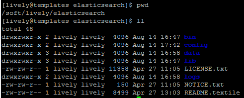

[+] Elastich service
[lively@templates elasticsearch]$ cat /etc/init.d/elasticsearch- #!/bin/sh
- ###########
- #
- # EDITOR: duy.vu@inspheris.fr
- #
- ##################
- #
- # elasticsearch <summary>
- #
- # chkconfig: 2345 80 20
- # description: Starts and stops a single elasticsearch instance on this system
- #
- #
- # Source function library.
- #
- if [ -f /etc/rc.d/init.d/functions ]; then
- . /etc/rc.d/init.d/functions
- fi
- #Export environment variables
- [ -e /soft/lively/elasticsearch/config/env_variables ] && . /soft/lively/elasticsearch/config/env_variables
- export ES_HEAP_SIZE
- export ES_HEAP_NEWSIZE
- export ES_DIRECT_SIZE
- export ES_JAVA_OPTS
- export JAVA_HOME
- export ES_HOME
- exec="${ES_HOME}/bin/elasticsearch"
- prog="elasticsearch"
- pidfile=${ES_HOME}/${prog}.pid
- lockfile=${ES_HOME}/$prog
- if [ ! -d "$ES_HOME" ]; then
- echo "please specify ES_HOME in config/env_variables file"
- exit 1
- fi
- # backwards compatibility for old config sysconfig files, pre 0.90.1
- if [ -n $USER ] && [ -z $ES_USER ] ; then
- ES_USER=$USER
- fi
- checkJava() {
- if [ -x "$JAVA_HOME/bin/java" ]; then
- JAVA="$JAVA_HOME/bin/java"
- else
- JAVA=`which java`
- fi
- if [ ! -x "$JAVA" ]; then
- echo "Could not find any executable java binary. Please install java in your PATH or set JAVA_HOME"
- exit 1
- fi
- }
- start() {
- checkJava
- [ -x $exec ] || exit 5
- [ -f $CONF_FILE ] || exit 6
- if [ -n "$MAX_LOCKED_MEMORY" -a -z "$ES_HEAP_SIZE" ]; then
- echo "MAX_LOCKED_MEMORY is set - ES_HEAP_SIZE must also be set"
- return 7
- fi
- if [ -n "$MAX_OPEN_FILES" ]; then
- ulimit -n $MAX_OPEN_FILES
- fi
- if [ -n "$MAX_LOCKED_MEMORY" ]; then
- ulimit -l $MAX_LOCKED_MEMORY
- fi
- if [ -n "$MAX_MAP_COUNT" -a -f /proc/sys/vm/max_map_count ]; then
- sysctl -q -w vm.max_map_count=$MAX_MAP_COUNT
- fi
- if [ -n "$WORK_DIR" ]; then
- mkdir -p "$WORK_DIR"
- chown "$ES_USER":"$ES_GROUP" "$WORK_DIR"
- fi
- echo -n $"Starting $prog: "
- # if not running, start it up here, usually something like "daemon $exec"
- daemon --user $ES_USER --pidfile $pidfile $exec -p $pidfile -d
- retval=$?
- echo
- [ $retval -eq 0 ] && touch $lockfile
- return $retval
- }
- stop() {
- echo -n $"Stopping $prog: "
- # stop it here, often "killproc $prog"
- killproc -p $pidfile -d 20 $prog
- retval=$?
- echo
- [ $retval -eq 0 ] && rm -f $lockfile
- return $retval
- }
- restart() {
- stop
- start
- }
- reload() {
- restart
- }
- force_reload() {
- restart
- }
- rh_status() {
- # run checks to determine if the service is running or use generic status
- status -p $pidfile $prog
- }
- rh_status_q() {
- rh_status >/dev/null 2>&1
- }
- case "$1" in
- start)
- rh_status_q && exit 0
- $1
- ;;
- stop)
- rh_status_q || exit 0
- $1
- ;;
- restart)
- $1
- ;;
- reload)
- rh_status_q || exit 7
- $1
- ;;
- force-reload)
- force_reload
- ;;
- status)
- rh_status
- ;;
- condrestart|try-restart)
- rh_status_q || exit 0
- restart
- ;;
- *)
- echo $"Usage: $0 {start|stop|status|restart|condrestart|try-restart|reload|force-reload}"
- exit 2
- esac
- exit $?
[lively@templates config]$ cat /soft/lively/elasticsearch/config/env_variables
- # Directory where the Elasticsearch binary distribution resides
- ES_HOME=/soft/lively/elasticsearch
- # Elasticsearch JAVA_HOME directory; use system defaults
- JAVA_HOME=/soft/lively/jdk
- # Heap Size (defaults to 256m min, 1g max)
- ES_HEAP_SIZE=1g
- # Heap new generation
- #ES_HEAP_NEWSIZE=
- # max direct memory
- #ES_DIRECT_SIZE=
- # Additional Java OPTS
- #ES_JAVA_OPTS=
- # Maximum number of open files
- MAX_OPEN_FILES=65535
- # Maximum amount of locked memory
- #MAX_LOCKED_MEMORY=
- # Maximum number of VMA (Virtual Memory Areas) a process can own
- MAX_MAP_COUNT=262144
- # Elasticsearch log directory
- #LOG_DIR=
- # Elasticsearch data directory
- #DATA_DIR=
- # Elasticsearch work directory
- #WORK_DIR=
- # Elasticsearch conf directory
- #CONF_DIR=/etc/elasticsearch
- # Elasticsearch configuration file (elasticsearch.yml)
- #CONF_FILE=
- # User to run as, change this to a specific elasticsearch user if possible
- # Also make sure, this user can write into the log directories in case you change them
- # This setting only works for the init script, but has to be configured separately for systemd startup
- ES_USER=lively
- # Configure restart on package upgrade (true, every other setting will lead to not restarting)
- #RESTART_ON_UPGRADE=true
[+] Tomcat service
- #!/bin/bash
- #############
- #
- # EDITOR: duy.vu@inspheris.fr
- #
- ###############
- # chkconfig: 2345 98 02
- # description: Inspheris rpm
- # processname: java
- #
- # Start/stop the queuing daemons.
- export JAVA_HOME=/soft/lively/jdk
- export JAVA_OPTS="$JAVA_OPTS -Xms1024m -Xmx1024m -XX:MaxPermSize=1024m -Dfile.encoding=UTF-8 "
- export PATH=$JAVA_HOME/bin:$PATH
- PROC_NAME=tomcat
- PROC_HOME=/soft/lively/tomcat7
- PROC_USER=lively
- TIMELIMIT=60
- SLEEPTIME=1
- # Function to wait until the processes are killed
- waitForProcessToDie()
- {
- PROCESSES=`ps auxwww | grep 'java' | grep $PROC_HOME | grep -v 'grep'`
- while [ ! -z "$PROCESSES" ] && [ $SECONDS -lt $TIMELIMIT ] && [ $TIMELIMIT -ne 0 ]; do
- echo -n "."
- sleep $SLEEPTIME
- PROCESSES=`ps auxwww | grep 'java' | grep $PROC_HOME | grep -v 'grep'`
- done
- echo ""
- if [ ! -z "$PROCESSES" ]; then
- PROCESS_ID=`echo $PROCESSES | awk '{ print $2 }'`
- echo "Killing process: $PROCESS_ID"
- kill -9 $PROCESS_ID
- fi
- }
- start () {
- cd $PROC_HOME/bin
- su $PROC_USER -c "./startup.sh"
- }
- stop() {
- cd $PROC_HOME/bin
- su $PROC_USER -c "./shutdown.sh"
- waitForProcessToDie
- }
- status() {
- PROCESSES=`ps auxwww | grep 'java' | grep $PROC_HOME | grep -v 'grep'`
- PROCESS_ID=`echo $PROCESSES | awk '{ print $2 }'`
- if [ ! -z "$PROCESSES" ]; then
- echo "tomcat process: ${PROCESS_ID} running"
- else
- echo "tomcat process is stopped"
- fi
- }
- case $1 in
- start)
- start
- ;;
- stop)
- stop
- ;;
- restart)
- stop
- start
- ;;
- status)
- status
- ;;
- esac
END